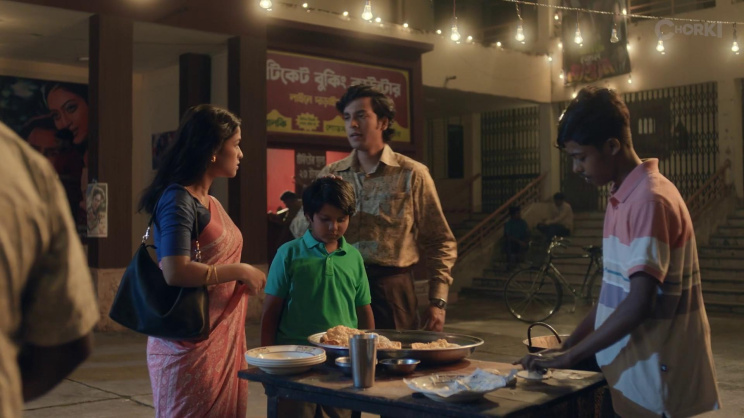
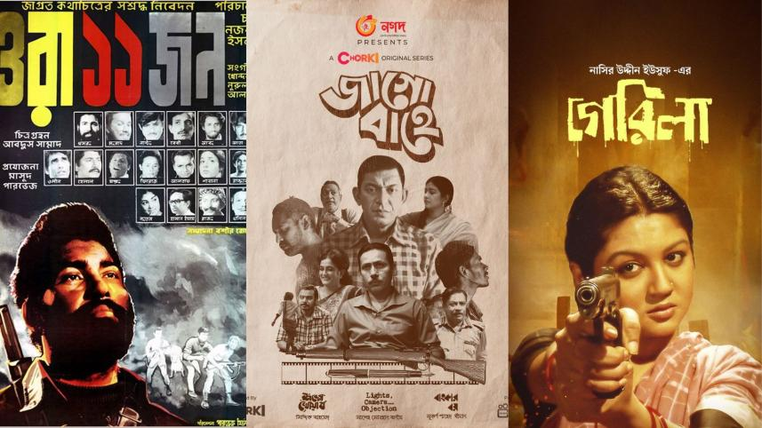

Many Dhallywood blockbusters – from Beder Meye Josna to Monpura – revolved around rural life or poverty dramas, rather than the experiences of Dhaka’s growing professional class. Only a handful of socially conscious films, such as Matir Moina, Lal Salu, and Kittonkhola, have tackled middle-class themes, and those were primarily art-house efforts. Mainstream Bangladeshi cinema has long prioritized "pastoral" tales and mass masala formulas, leaving the values and challenges of city life largely unseen on screen.
City Dreams vs. Village Dramas
This gap hasn’t gone unnoticed. Critics point out that many Dhaka-born generations often skip Dhallywood altogether, choosing instead to stream or import Bollywood and Hollywood films. The familiar formula – ostentatious heroes wielding machetes, item songs, and rural "grassroots" patriotism – no longer resonates with white-collar viewers.
For example, Farooki’s Doob (2017), about a filmmaker in Gulshan, was praised for addressing urban issues but criticized for its portrayal of excessive wealth. One reviewer quipped, “The lifestyle is too affluent” – making the story feel unreal. Even when filmmakers attempt urban settings, the execution often rings false. In contrast, the surprise success of Aynabaji (2016) proved there was an appetite for smart city stories, though such cases remain rare. Other recent attempts have either attracted only modest audiences or flopped, suggesting Dhallywood still struggles to depict urban life convincingly.

Bridging the gap: Dhallywood's struggle to mirror the urban professional experience.
Utshob’s Urban Awakening
Utshob (2025) changed the conversation. Released during Eid, when only the biggest mainstream films typically play, this family drama is set entirely in Dhaka’s Mohammadpur neighborhood. It portrays festival gatherings and family tensions as central themes, integrating local Dhaka traditions and metro city soundscapes. Critics immediately noted that Utshob "explores the complexities of urban middle-class life in Bangladesh" rather than offering typical escapism.
Importantly, Utshob quickly became a mainstream hit. Reviewers highlighted that its success was "a testament to the fact that guns, mayhem, and item songs do not monopolize film demand." In short, Utshob hit a sweet spot: urban audiences saw their own lives reflected. As one opinion writer observes, its performance shows educated middle-class viewers are celebrating this refreshing treat.
Streaming City: OTT’s New Urban Stories
Streaming platforms have become the real champions of urban narratives. Since 2020, Chorki, Bongo, and Bioscope have launched dozens of series squarely aimed at Dhaka’s youth and middle class. Notably, much of their original content centers on city life:
- Oshomoy (2023, Bongo): A family drama about a Dhaka middle-class household juggling jobs, loans, and elderly care.
- Last Defenders of Monogamy (2023, Chorki): Set in an urban office and Metro Rail compartment, following a modern businessman wrestling with love and betrayal.
- Forget Me Not (2023, Chorki): A series about young professionals in Dhaka balancing ambition, romance, and family pressure.
- Maya (2023, Bongo): A thriller about an urban couple whose life is upended by bureaucracy, highlighting Dhaka’s social undercurrents.
- Kacher Manush Dure Thuiya (2024, Chorki): A college-age love story exploring values and long-distance relationships.
The “OTT revolution” is giving urbanites their screen mirror, dealing with topics from metro commuting to corporate ethics that rarely reach multiplexes.

The OTT shift: Platforms like Chorki and Bongo are redefining urban storytelling.
From Streaming Back to Theaters?
Early signs of this transition are mixed. On one hand, Utshob and Chokkor 302 suggest multiplex audiences will turn out for quality social dramas when well-marketed. Chorki itself has stepped into theatrical production, signaling industry confidence that city stories can cross over.
On the other hand, many experts still view theatrical production as risk-averse. As urban viewers increasingly binge-watch at home, Dhallywood is watching closely. Some predict a hit series could see a cinema spin-off, or vice versa, in the coming years.
In sum, Bangladesh’s cinema is at a turning point. The industry has long relied on rural melodrama for mass appeal, but there’s now evidence the burgeoning middle class wants to see itself onscreen. Filmmakers should seize this moment – blending emotional realism with commercial flair – or risk losing another generation of urban moviegoers.